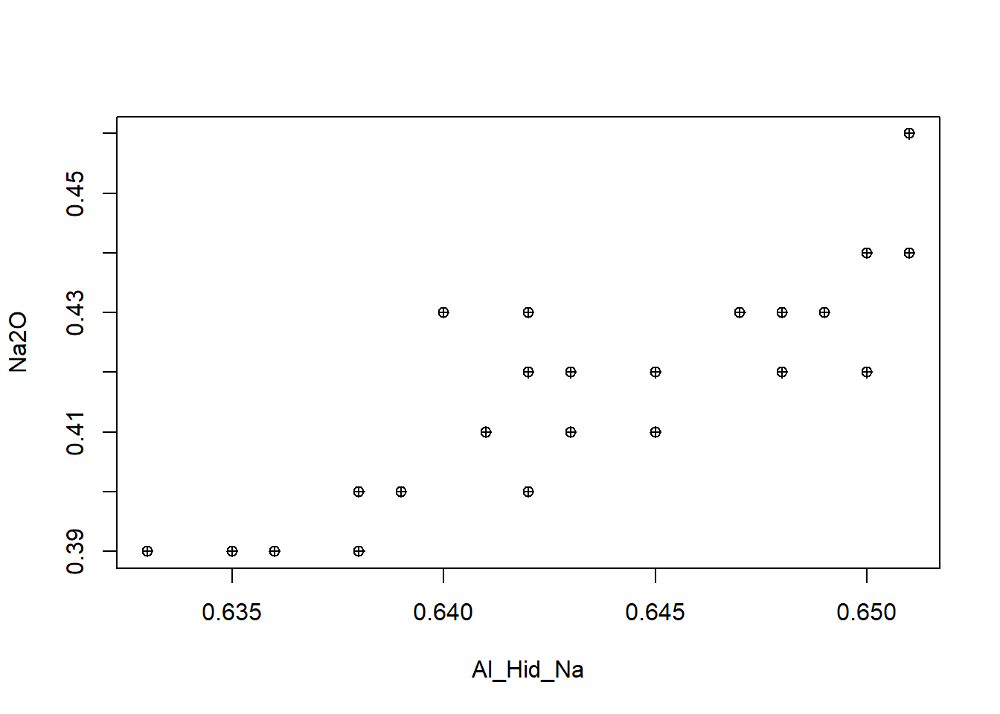
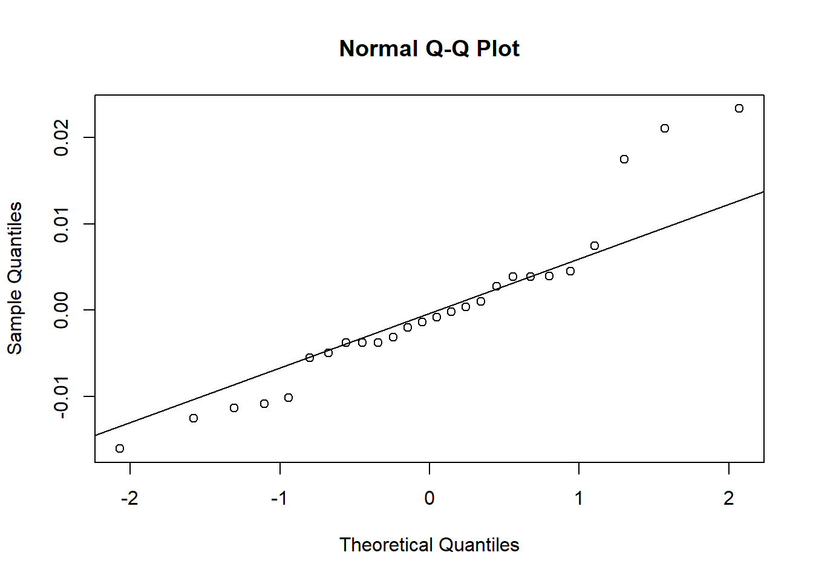
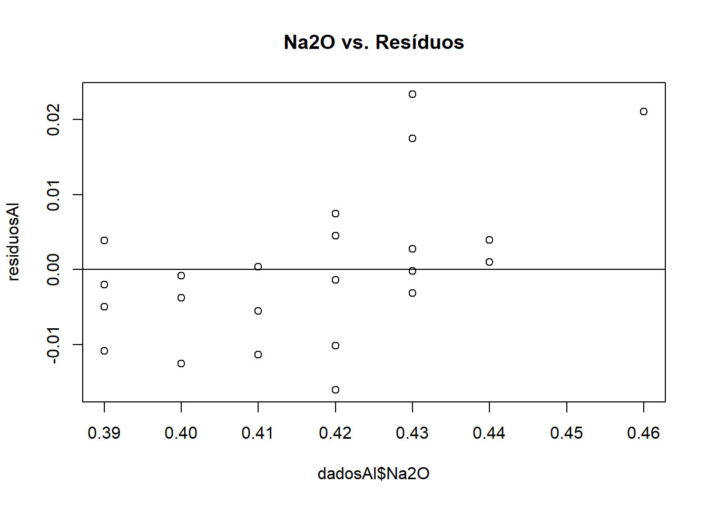
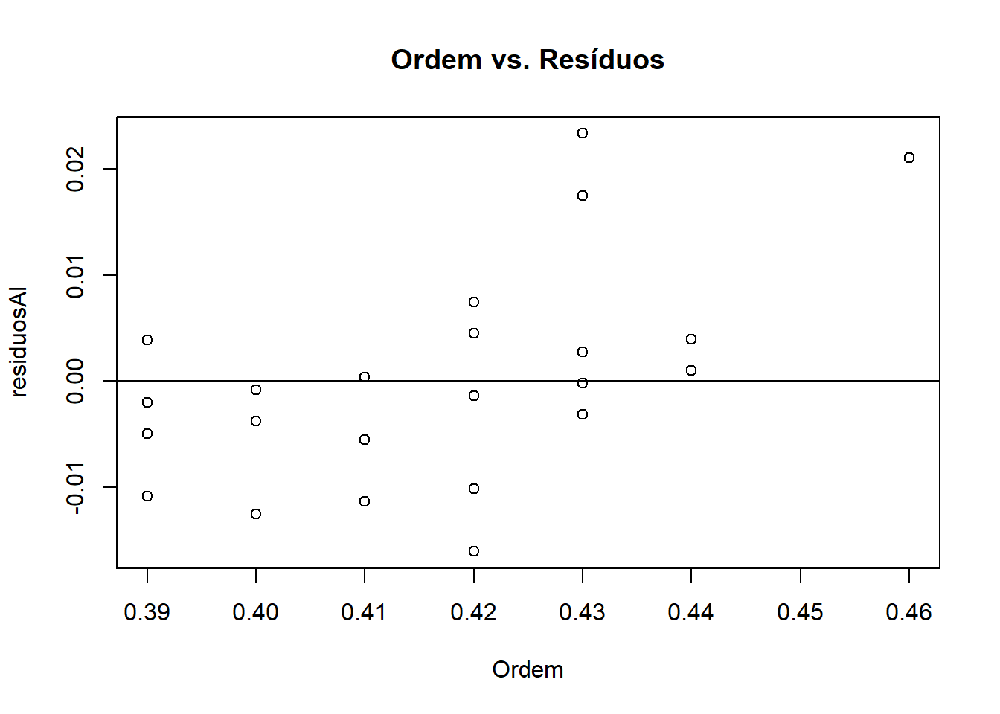
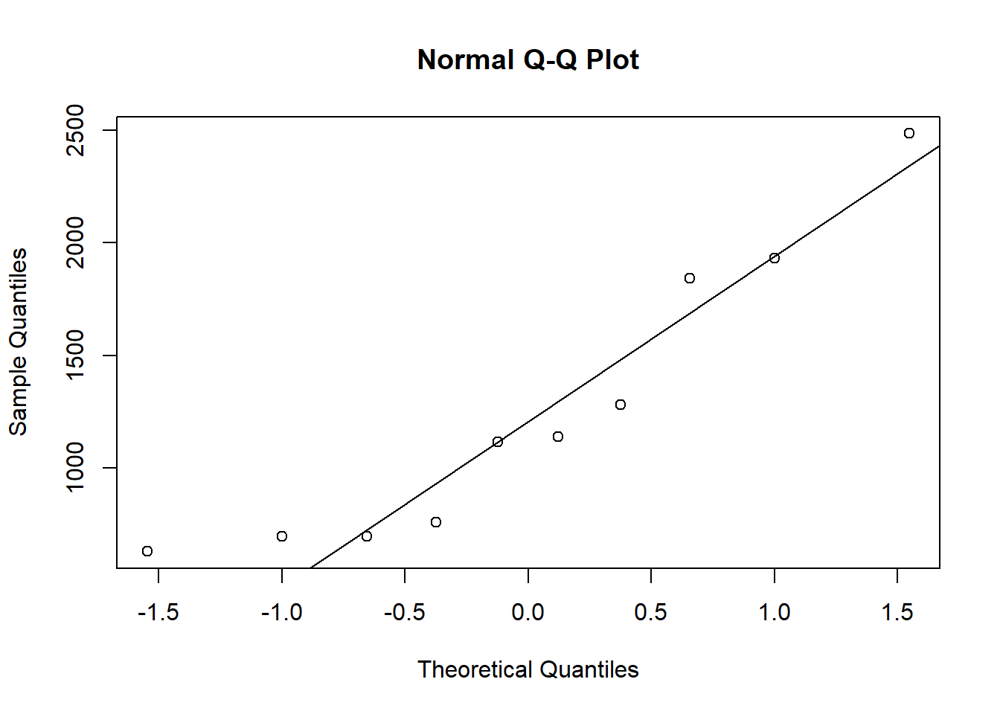
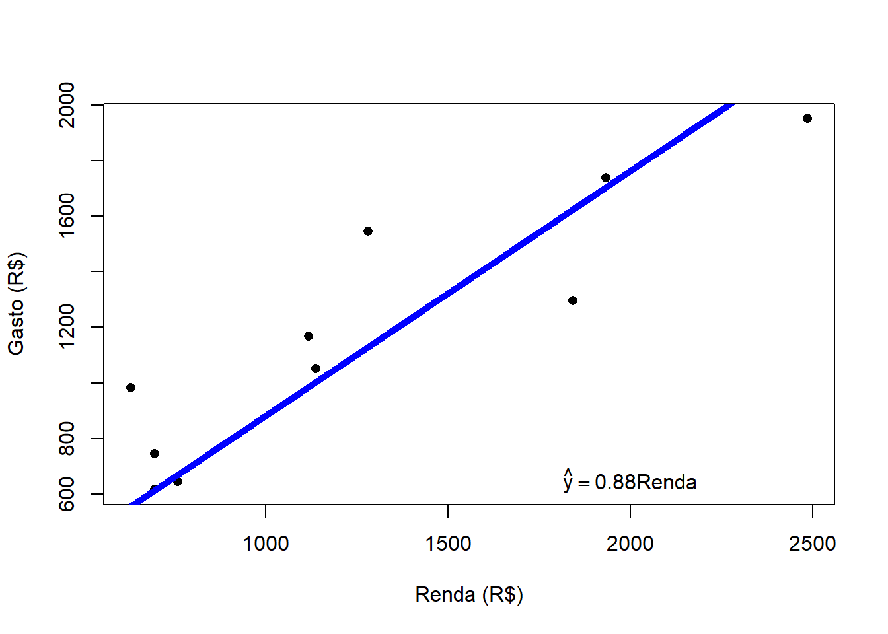
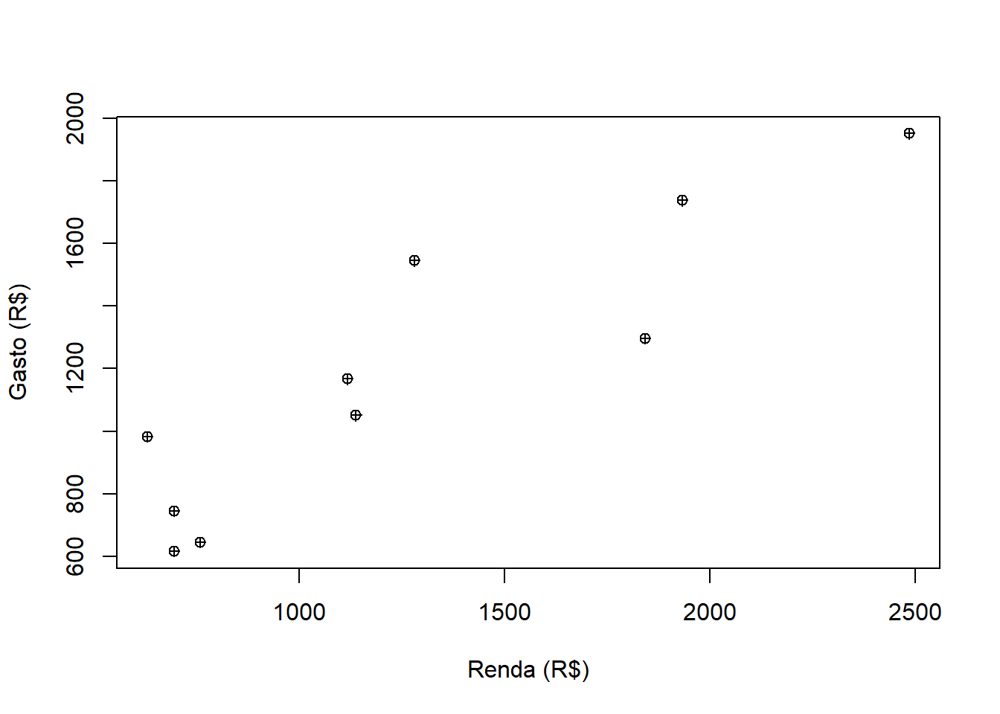

Estudos para modelamento da relação entre duas variáveis, sendo: Variável preditora (X):
variável explicativa (ou regressora, ou independente ou covariável) de interesse, que influencia na determinação da variável-resposta (Y).
Variável Resposta (Y): variável de interesse no estudo e modelamento, sob a qual deseja-se otimizar e/ou controlar (variável dependente).
Estuda a influência da variabilidade de uma variável Y sob influência de causas determinísticas e/ou probabilísticas atuantes sobre a variável preditora X. As relações entre Y=f(X) nem sempre são determinísticas, podem ser probabilísticas.
Em geral, nas regressões lineares simples, a equação que descreverá a interação entre as variáveis será a de uma reta, aqui expressa como: \[ y= \beta_0 + \beta_1X_1 + \epsilon \]
onde: \(\beta_0\) é o intercepto linear no eixo y, \(\beta_1\) é o coeficiente angular da reta (ou coeficiente da regressão), e \(\epsilon\) é o erro devido à variabilidade do processo produzida por causas atuantes na variável preditora x.
Para os casos de mais de uma variável independente em estudo, utilizamos o modelo de regressão linear múltipla, expressa pela equação:
É recomendável, inicialmente, para as regressões lineares simples, plotar um gráfico com as variáveis dependente (eixo x) e independente (eixo y), o que permite avaliar a tendência de relação linear ou não. Para isso, utiliza-se o comando:
Warning in plot.window(...): "data" não é um parâmetro gráfico
Warning in plot.xy(xy, type, ...): "data" não é um parâmetro gráfico
Warning in axis(side = side, at = at, labels = labels, ...): "data" não é um
parâmetro gráfico
Warning in axis(side = side, at = at, labels = labels, ...): "data" não é um
parâmetro gráfico
Warning in box(...): "data" não é um parâmetro gráfico
Warning in title(...): "data" não é um parâmetro gráfico

Igualmente importante é analisar a normalidade dos dados. Para isso, realza-se o teste de Shapiro.WilK.
Testes de normalidade:
H_0:Os dados seguem uma distribuicao Normal
H_1:Os dados nao seguem uma distribuicao Normal
shapiro.test(dadosAl$Al_Hid_Na)
Shapiro-Wilk normality test
data: dadosAl$Al_Hid_Na
W = 0.95304, p-value = 0.273
shapiro.test(dadosAl$Na2O)
Shapiro-Wilk normality test
data: dadosAl$Na2O
W = 0.92861, p-value = 0.07183
Com base nos valores do teste de normalidade utilizado, para um nível de significância de 5%, não há evidências estatísticas para se rejeitar a hipótese nula, ou seja, a hipótese de não normalidade dos dados.
Uma análise descritiva dos dados nos permite obter informações sobre a posição central dos dados (média ou mediana) e a sua variabilidade (desvio-padrão):
Estatística descritiva
#Medidas de Posicao para Al_Hid_Nasummary(dadosAl$Al_Hid_Na)
Min. 1st Qu. Median Mean 3rd Qu. Max.
0.6330 0.6390 0.6420 0.6426 0.6478 0.6510
sd(dadosAl$Al_Hid_Na)
[1] 0.005507617
#Medidas de Posicao para Na2Osummary(dadosAl$Na2O)
Min. 1st Qu. Median Mean 3rd Qu. Max.
0.3900 0.4000 0.4150 0.4142 0.4300 0.4600
sd(dadosAl$Na2O)
[1] 0.01879853
Correlação
Uma vez que a linearidade é uma boa suposição, analisa-se a correlação entre os dados, através do comando “cor”:
O valor de 0.86 é considerado uma correlação forte entre as variáveis do modelo, portanto, há uma tendência forte de que ao se elevar os valores da variável independente Na2O haverá um acréscimo diretamente proporcional na variável dependente Al_Hid_Na. Com isso, gera-se o modelo de regressão, através do comando “lm”.
Ajuste do modelo de regressao linear simples
modeloAl<-lm(Na2O~Al_Hid_Na , data = dadosAl) # O modelo ajustado :summary(modeloAl)
Call:
lm(formula = Na2O ~ Al_Hid_Na, data = dadosAl)
Residuals:
Min 1Q Median 3Q Max
-0.016025 -0.004623 -0.001069 0.003887 0.023335
Coefficients:
Estimate Std. Error t value Pr(>|t|)
(Intercept) -1.4724 0.2283 -6.449 1.14e-06 ***
Al_Hid_Na 2.9360 0.3553 8.264 1.77e-08 ***
---
Signif. codes: 0 '***' 0.001 '**' 0.01 '*' 0.05 '.' 0.1 ' ' 1
Residual standard error: 0.009784 on 24 degrees of freedom
Multiple R-squared: 0.74, Adjusted R-squared: 0.7291
F-statistic: 68.29 on 1 and 24 DF, p-value: 1.768e-08
#Estimativa dos coeficientessummary(modeloAl)$coefficients
Estimate Std. Error t value Pr(>|t|)
(Intercept) -1.472404 0.2283070 -6.449228 1.141096e-06
Al_Hid_Na 2.936045 0.3552866 8.263879 1.768456e-08
A expressão de regressão linear simples para o modelo entre as variáveis estudadas pode ser resumido por:
Na2O = 2,936 * Al_Hid_Na - 1,472
Ou seja, para cada unidade de Na2O adicionado ao processoo teor de Al_Hid_Na se elevará em 2,936 unidades. Vamos utilizar o primeiro valor dos dados fornecidos para a regressão, o par ordenado (0,647; 0,43). Utilizando a expressão anterior, a regressão forneceria uma previsão de Na2O para o valor de 0,647 para Al_Hid_Na de:
dadoAl_Hid_Na <-0.647ValorNa2O<-2.936*dadoAl_Hid_Na -1.472cat("O valor esperado de Al_Hid_Na é de: ", ValorNa2O)
O valor esperado de Al_Hid_Na é de: 0.427592
Note que o valor é próximo ao valor real de 0,43 na tabela de dados inicial. Isso se deve ao bom ajuste da reta regressiva aos pontos, que pode ser indicado pelo valor do coeficiente de determinação R2, igual a 0,74 (vide relatório acima do modelo, valor “Multiple R-squared”. O valor também pode ser encontrado por:
summary(modeloAl)$r.squared
[1] 0.7399549
# Ou em forma percentual:summary(modeloAl)$r.squared*100
[1] 73.99549
Igualmente, o modelo possui baixo erro padrão (0,009784) e um valor-p do modelo praticamente igual a zero, o que leva à aprovação do modelo de regressão para utilização.
É possível buscar valores específicos de estatísticas no modelo ajustado. pode ser utilizado o comando “cat” para organizar uma frase resposta para indicar mais detalhadamente o que se busca, como:
#Estimativa do desvio-padrao do erro (sigma) cat("O desvio-padrão do erro é igual a: ", summary(modeloAl)$sigma)
O desvio-padrão do erro é igual a: 0.009783912
#Estimativa da variancia do erro (sigma^2)cat("A Variância do erro é igual a: ", summary(modeloAl)$sigma^2)
A Variância do erro é igual a: 9.572492e-05
Para se verificar os valores dos erros do modelo, pode ser aplicada a função “anova”, que fornece a soma dos quadrados dos erros para a variável independente e também dos resíduos:
anova(modeloAl)
Analysis of Variance Table
Response: Na2O
Df Sum Sq Mean Sq F value Pr(>F)
Al_Hid_Na 1 0.0065372 0.0065372 68.292 1.768e-08 ***
Residuals 24 0.0022974 0.0000957
---
Signif. codes: 0 '***' 0.001 '**' 0.01 '*' 0.05 '.' 0.1 ' ' 1
Para se conhecer os valores mínimos e máximos estimados pelo intrevalo de confiança, deve-se fazer a estimação intervalar dos coeficientes da regressão pelo comando “confint”:
#Intervalos de Confianca para coeficientesconfint(modeloAl, level=0.95)
Assim, o valor provável de $ \beta_0 $ (intercepto linear da equação de regressão) está entre -1.944 e -1.001, e para o coeficiente angular $\beta_1 $ está entre 2.203 e 3.669, com 95% de confiança. Para visualizar graficamente a regressão, pode-se proceder como:
É importante analisar os resíduos da regressão, pois pode ser sinalzado alterações importantes no comportamento dos dados quanto a violações do requisito de variância constante, ou ausência de autocorrelação entre os resíduos. Para isso, realiza-se os seguntes passos:
# Criar objetos com os resíduos do modelo e com os valores preditos:residuosAl <- modeloAl$residuals #Calcula o vetor de residuos preditosAl <-predict(modeloAl) #Calcula os valores preditos
Teste de normalidade dos erros:
#Grafico de probabilidade normalqqnorm(residuosAl) ; qqline(residuosAl)

#Teste de normalidade de Shapiro Wilkshapiro.test(residuosAl)
Shapiro-Wilk normality test
data: residuosAl
W = 0.92457, p-value = 0.0576
Homocedasticidade
Visualizando graficamente a suposicao de variância constante: gráfico Residuos x Preditos
plot(preditosAl, residuosAl, main="Ajustados vs. Resíduos") abline(h=0)
Visualizando graficamente a suposicao de variância constante: gráfico Covariavel Na2O x Preditos
plot(dadosAl$Na2O, residuosAl, main="Na2O vs. Resíduos") abline(h=0)

Avaliando a suposição de variância constante: gráfico Covariavel Al_Hid_Na x Preditos
plot(dadosAl$Al_Hid_Na, residuosAl, main="Al_Hid_Na vs. Resíduos") abline(h=0)
Para uma análise quantitativa, utiliza-se o teste de Breusch-Pagan: avalia a suposição de homogeneidade da variância dos erros do modelo.
#Instala e/ou carrega o pacote lmtest if(!require(lmtest)){install.packages("lmtest");require(lmtest)}
Carregando pacotes exigidos: lmtest
Warning: pacote 'lmtest' foi compilado no R versão 4.5.2
Carregando pacotes exigidos: zoo
Warning: pacote 'zoo' foi compilado no R versão 4.5.2
Anexando pacote: 'zoo'
Os seguintes objetos são mascarados por 'package:base':
as.Date, as.Date.numeric
bptest(modeloAl)
studentized Breusch-Pagan test
data: modeloAl
BP = 0.99573, df = 1, p-value = 0.3183
Dado o p-valor maior que o nível de significãncia de 5%, não há evidẽncias que que a suposição de homogeneidade de vriâncias tenha sido violada.
Independência dos resíduos
Avaliando suposicao de independência dos resíduos: gráfico Residuos x Ordem de Coleta
plot(dadosAl$Na2O, residuosAl, main="Ordem vs. Resíduos", xlab="Ordem") abline(h=0)

# Teste de Durbin-Watson (pacote lmtest) lmtest::dwtest(modeloAl, alternative ="two.sided")
Durbin-Watson test
data: modeloAl
DW = 0.96809, p-value = 0.003189
alternative hypothesis: true autocorrelation is not 0
Com base na análise gráfica e na quantitativa de Durbin-Watson, constata-se que há evidências de que ocorra a interdependência dos resíduos (valor-p<0.05, rejeitando-se a hipótese nula de independência dos resíduos), ou seja, a ordem de coleta está influenciando a análise. Isso sugere-se que haja maior investigação da forma como a amostragem foi conduzida, podendo ser elhorada e, então, repetidos os testes para validação final do modelo.
Exemplo 2 - Gastos x Renda
Dados: Gasto mensal versus Renda mensal
Objetivos: Analise descritiva, grafico de dispersao, calcular coeficiente de correlacao, ajustar um modelo de regressao simples, interpretar as saidas do R.
cor(Renda, Gasto, method =c("pearson")) #Funcao do R para calcular a correlacao
[1] 0.9038455
Teste de significância de correlação
#Teste de significancia para a correlacao (requer normalidade): qqnorm(Gasto); qqline(Gasto)
qqnorm(Renda); qqline(Renda)

Testes de normalidade
# Testes de normalidade: #H_0:Os dados seguem uma distribuicao Normal #H_1:Os dados nao seguem uma distribuicao Normal shapiro.test(Gasto)
Shapiro-Wilk normality test
data: Gasto
W = 0.94453, p-value = 0.6045
shapiro.test(Renda)
Shapiro-Wilk normality test
data: Renda
W = 0.87877, p-value = 0.1263
Teste de Correlação
#Teste para a correlacao # H_0:rho=0 versus H_1:rho!=0 cor.test(Gasto, Renda, alternative =c("two.sided"), method =c("pearson"))
Pearson's product-moment correlation
data: Gasto and Renda
t = 5.975, df = 8, p-value = 0.0003325
alternative hypothesis: true correlation is not equal to 0
95 percent confidence interval:
0.6363647 0.9773033
sample estimates:
cor
0.9038455
MMQ para coeficientes da reta
#Ajuste do modelo de regressao linear simples (MRLS): cov(Renda, Gasto)/var(Renda) #Estimativa do MMQ para beta_1
[1] 0.6549867
mean(Gasto)-cov(Renda, Gasto)/var(Renda)*mean(Renda) #Estimativa do MMQ para beta_0
[1] 349.6594
Ajuste do modelo
modelo <-lm(Gasto ~ Renda) #Funcao do R para o ajuste do MRLS summary(modelo) #Mostra alguns resumos do ajuste names(summary(modelo)) summary(modelo)$coefficients
Estimate Std. Error t value Pr(>|t|)
(Intercept) 349.6594155 152.8215644 2.288024 0.05142321
Renda 0.6549867 0.1096211 5.975007 0.00033254
summary(modelo)$sigma #Estimativa do desvio-padrao do erro (sigma)
[1] 208.5835
summary(modelo)$sigma^2#Estimativa da variancia do erro (sigma^2)
[1] 43507.09
summary(modelo)$r.squared*100#Valor do R2 (Coeficiente de Determinacao)
[1] 81.69366
cor(Gasto, Renda)^2*100#Na RLS simples, R2=(r)\^2
[1] 81.69366
O modelo ajustado foi: y=349.66+0.655*x
ANOVA
anova(modelo) #Tabela ANOVA
Analysis of Variance Table
Response: Gasto
Df Sum Sq Mean Sq F value Pr(>F)
Renda 1 1553234 1553234 35.701 0.0003325 ***
Residuals 8 348057 43507
---
Signif. codes: 0 '***' 0.001 '**' 0.01 '*' 0.05 '.' 0.1 ' ' 1
MMQ
#Verificando a estimativa do MMQ para sigma^2: var(modelo$residuals)*9/8#Estimativa do MMQ para sigma\^2
[1] 43507.09
IC para Coeficientes da Reta
# Fazer estimacao intervalar dos coeficientes/parametros: alpha=0.05confint(modelo, level=1-alpha) #Intervalos de Confianca para coeficientes da reta
2.5 % 97.5 %
(Intercept) -2.7477440 702.0665750
Renda 0.4022001 0.9077734
Variância do Erro
#Para a variância do erro o R nao faz diretamente:sum(modelo$residuals^2)/qchisq(1-alpha/2,df=modelo$df.residual) # lower bound
# Se formos retirar o intercepto do modelo, basta incluir "-1" ou "+0" no lado direito da formula: modelo2 <-lm(Gasto ~ Renda -1) #Funcao do R para o ajuste do MRLSsummary(modelo2) #Mostra alguns resumos do ajuste anova(modelo2)
Call:
lm(formula = Gasto ~ Renda - 1)
Residuals:
Min 1Q Median 3Q Max
-328.16 -16.32 40.41 169.72 427.41
Coefficients:
Estimate Std. Error t value Pr(>|t|)
Renda 0.88124 0.05738 15.36 9.18e-08 ***
---
Signif. codes: 0 '***' 0.001 '**' 0.01 '*' 0.05 '.' 0.1 ' ' 1
Residual standard error: 252.9 on 9 degrees of freedom
Multiple R-squared: 0.9632, Adjusted R-squared: 0.9592
F-statistic: 235.9 on 1 and 9 DF, p-value: 9.185e-08
confint(modelo2, level =1-alpha)
2.5 % 97.5 %
Renda 0.7514434 1.011031
# Gráfico de dispersao com o modelo ajustado sem intercepto: plot(Renda, Gasto, pch=16, xlab ="Renda (R$)", ylab ="Gasto (R$)") #Grafico de dispersao abline(modelo2, col="blue", lwd=5) coefs2 <-as.numeric(round(modelo2$coefficients, 2)) text(x=2000, y=650, labels =parse(text=paste0('hat(y) == ', ifelse(sign(coefs2[1])==1, "", " - "), coefs2[1],'*', '"Renda"')))

Caution
Ponto para discussão: vale mesmo a pena remover o intercepto?
# Analise do relacionamento entre as variaveis: plot(Renda, Gasto, pch=10, xlab ="Renda (R$)", ylab ="Gasto (R$)") #Grafico de dispersao

cor(Renda, Gasto, method =c("pearson")) #Funcao do R para calcular a correlacao
[1] 0.9038455
# Ajuste do modelo de regressao linear simples (MRLS): modelo1 <-lm(Gasto ~ Renda) summary(modelo1) #Resumo dos resultados do ajuste
Call:
lm(formula = Gasto ~ Renda)
Residuals:
Min 1Q Median 3Q Max
-260.86 -156.94 -35.94 112.26 356.38
Coefficients:
Estimate Std. Error t value Pr(>|t|)
(Intercept) 349.6594 152.8216 2.288 0.051423 .
Renda 0.6550 0.1096 5.975 0.000333 ***
---
Signif. codes: 0 '***' 0.001 '**' 0.01 '*' 0.05 '.' 0.1 ' ' 1
Residual standard error: 208.6 on 8 degrees of freedom
Multiple R-squared: 0.8169, Adjusted R-squared: 0.7941
F-statistic: 35.7 on 1 and 8 DF, p-value: 0.0003325
anova(modelo1) #Mostra a tabela de Analise de Variancia (Teste F)
Analysis of Variance Table
Response: Gasto
Df Sum Sq Mean Sq F value Pr(>F)
Renda 1 1553234 1553234 35.701 0.0003325 ***
Residuals 8 348057 43507
---
Signif. codes: 0 '***' 0.001 '**' 0.01 '*' 0.05 '.' 0.1 ' ' 1
confint(modelo1, level=0.95) #Intervalos de Confianca para coeficientes
2.5 % 97.5 %
(Intercept) -2.7477440 702.0665750
Renda 0.4022001 0.9077734
# Fazer predicao dos valores médios da resposta a partir de um valor \# da variavel explicativa: uso da reta de regressao novo_x <-data.frame(Renda=1500) predict(modelo1, newdata=novo_x, interval ="none", se.fit =TRUE)
predict(modelo1, newdata = novo_x, interval ="confidence") #Intervalo de confianca para a media da resposta
fit lwr upr
1 1332.14 1168.152 1496.127
predict(modelo1, newdata=novo_x, interval ="prediction") #Intervalo de confianca para a valor individual da resposta
fit lwr upr
1 1332.14 823.959 1840.32
#Predicao para vetor de 5 'novos' valores da variavel explicativa: #O erro-padrao aumento conforme nos afastamos do ponto (mean(Renda), mean(Gasto)) novos_x <-data.frame(Renda =c(min(Renda)-1, 900, mean(Renda), 1800, max(Renda)+1)) predict(modelo1, newdata=novos_x, interval ="none", se.fit =TRUE)